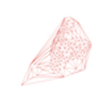
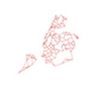

Spatial Epi
An Introduction to Spatial Epidemiology
Online Notes
I have prepared a rather extensive document of spatial epidemiology notes, applications and vignettes. This is essentially material from other sources, so the first order of business is to give credit where credit is due. The material is taken in large measure from some fantastic original sources, in particular the excellent Applied Spatial Data Analysis with R by Roger Bivand, Edzer Pebesma and Virgilio Gomez-Rubio. Buy the book. It is worth it. I stole even more code from one of Dr. Bivand’s course websites. I also leaned heavily on Andrew Lawson’s wonderful book on Bayesian Disease Mapping, which is similarly unequivocally recommended (as are any and all workshops he holds). The brief description of spatial point processes near the end of the document draws extensively from Adrian Baddely’s online notes.
The first section deals with reasons why an epidemiologist may or may not want to incorporate spatial analyses into their work. If spatial analysis makes sense, I make the case for using R to conduct it, and spend a little time going over what spatial data are, and the tools R provides for dealing with them. I next detail how to install the tools you’ll need and read in spatial data so that you can analyze it in R, with some instructions on getting the open-source GIS program GRASS installed on a Mac or Linux system (I stopped using PC’s a few years ago. Sorry.) I then address how areal neighbors are defined, either using contiguity definitions, graph-based definitions or distance-based definition. After that, there material about defining weights for the neighbors, and testing for spatial autocorrelation. That is followed by several sections of notes on modeling areal data, and applying Bayesian hierarchical approaches to spatial data. I demonstrate the methods using a set of data on traumatic brain injury among children in New York City. The code for these examples is for WinBUGS or JAGS, but I have recently added a new complete section introducing some theoretical and practical approaches to analyzing spatiotemporal data using Integrated Nested Laplace Approximations (INLA) in R.
My intent is to present a relatively brief, hopefully not overly jargony overview of how practicing epidemiologists can apply some open-source, but extremely powerful, spatial analytic tools. For the short-term, the material is directed toward a doctoral-level epidemiology methods class that I teach, but I hope it may also provide some guidance to practicing epidemiologists, particularly injury epidemiologists, who may not have had much opportunity to incorporate spatial methods into their usual practice. I make and effort to define terms and concepts as simply as possible or at least simply enough so that I understand them., and try to provide enough examples and code so that someone with at least a master’s degree level of training in epidemiology can start applying these tools almost immediately to their own data and problems.
The material is unapologetically based on the kinds of issues and topics which interest me, and which I’ve spent some time working on. You will find a lot of references to trauma and injury. You will find a lot of ecological or areal analyses. You will not find much, if anything, about geostatistics. This is the application of spatial statistics to interpolate and predict values and includes topics like kriging. It is simply not something with which I’ve had to deal in my in my epidemiological work. Similarly, I consider point process analysis another highly specialized topic that I’ve not had to apply in my practice. If confronted with such data, I would likely seek help and collaboration from a `real’ medical geographer or spatial analyst. It is though a topic to which epidemiologists are likely to see reference, so I’ve tried to perform due diligence and included some information and an example later in these notes.
Spatial Analysis Book Chapter
If you are interested in a one-stop overview of spatial analyses, here is a single draft book chapter on the subject intended for public health and substance use researchers. It will help you become familiar with some of the available data analytic techniques, each of which comes with advantages and drawbacks. In the chapter, my co-authors and I (of whom Angela Bucciarelli really did most of the heavy lifting) discuss three cluster detection tools and their associated software applications. We then present a Bayesian hierarchical approach, briefly reviewing its theoretical underpinnings, commonly used models, and how inferences may be drawn a sample-based posterior distribution. We demonstrate the use of each approach on a set of substance abuse mortality data, comparing the results across the four tools. Our empiric illustration, considers the role of neighborhood-level socioeconomic status (SES) in explaining opiate-related overdose deaths in New York City. We end with a discussion of the implications of the choice of technique and software on interpreting spatial analyses of substance abuse and conclude that the choice of a method will be driven by the question to be answered, data and software availability and the intended audience or context in which the research is being conducted.
Spatial Epidemiology Slides
For those of you with even less time to get up to speed, take a look at this set of HTML slides introducing working with spatial data in R.
Shout Out to Texas A&M Geoservices
There are myriad spatial analytic resources online, but I have found the Texas A&M Geoservices site immensely useful for things like batch geocoding addresses into longitude and latitude.
A Different View of the World
Finally, here are a couple of views of my hometown from a spatial epidemiologic perspective.


The code to recreate them is in the online notes references above.